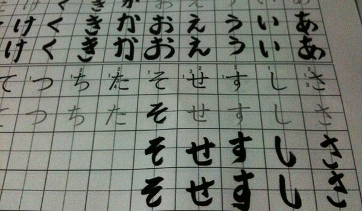

Hiragana (ひらがな)
Hiragana is “feminine, curvaceous, and lovable” - Gakuranman

Hiragana is going to be your main phonetic “alphabet,” and it’s also going to be the first thing that you learn. By learning hiragana first, you’ll get a lot of benefit. Some people “learn” romaji first, but as you now know, that’s a big waste of your time. Not only that, but we’re going to learn hiragana real fine (say that in a thick Southern accent for better effect), and spend a little extra time with this curvaceous, lovable, “alphabet.” Why would I want to make you suffer more right now (don’t worry, it’s not actually that bad) so you can laugh in the face of Japanese later? Let us count the ways.
- Hiragana first means learning your Japanese pronunciation early. This will help you sound less like a foreigner.
- Hiragana will help you understand how Japanese works, on a deeper, technical level.
- Hiragana gives you a great foundation for learning Japanese. It’s a splendid place to start.
- By learning hiragana now (and learning it well), you’ll really speed up what you’ll be able to learn later. Since almost all of our initial learning will be in hiragana, the faster you get over learning it, the faster you’ll be able to focus on what’s actually important (you know, everything else!).
- I want you to suffer a little bit. Think of hiragana as a test – if you can’t do this, then you probably don’t actually want to learn Japanese enough. So, my question to you is… do you want it? Okay, who’s still left? Great to have you!
So, how is hiragana used in Japanese? There’s a few different ways, and you’ll experience all of them pretty soon, but it’s good to get an idea now so that you can expect these things later on, as you’re learning the hiragana itself. Hiragana is used in…
- Difficult kanji: You’ll learn to love this one. When a kanji (kanji are the Chinese characters, you’ll learn about them soon) is too difficult (too many strokes!), a lot of times it’s better, easier and more common to write things out in hiragana instead.
- Words with no kanji: Sometimes there’s a word that doesn’t have a kanji… so, you get to use hiragana instead (or katakana, depending).
- Particles: In English, this basically means all those little words that connect other words together. Things like “and,” “or,” etc. When it comes to things like this, you’ll be using hiragana.
- Suffixes: A lot of Japanese words end with suffixes. One big example is names. Maybe you’ve heard this before? At the end of a name you’ll often see the suffix “-san” attached. It’s a nice little honorific, and it’s something we’ll talk more about soon, so you don’t go and insult somebody.
- Verb & Adjective Inflections: It’s not something you need to understand right now, but hiragana is also used to give context to verbs and adjectives. The hiragana attached to a verb is what tells us if a word is past tense, present, negative, and more! We’ll learn more on this later as we get into verbs and adjectives, so don’t worry about it now, just know that it exists.
There’s plenty more to be done with hiragana, but before we do that, we should take a look at the remaining two “alphabets” really quick. We won’t dilly dally, either.